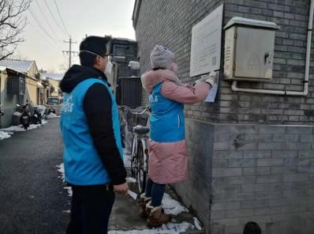
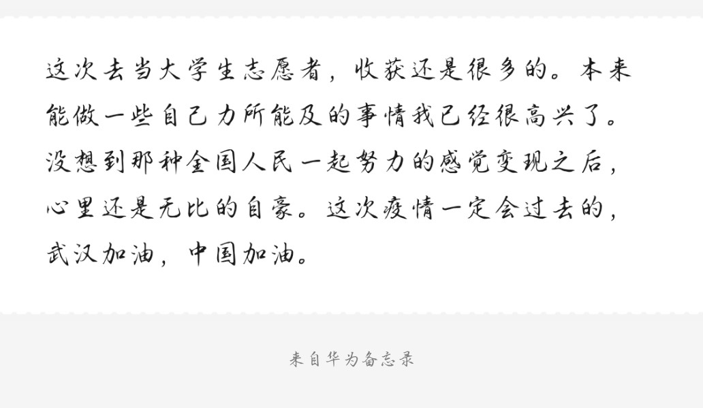
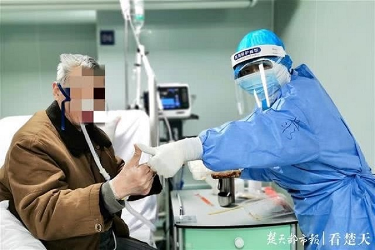

啊啊啊啊啊啊啊啊啊啊啊啊啊啊啊啊啊啊啊啊啊啊啊啊啊啊啊啊啊啊啊啊啊啊啊啊啊啊啊啊啊啊啊啊啊啊啊啊啊啊啊啊啊啊啊啊啊
事例一：“守护社区、战疫有我。”
“17年前的非典，我在上小学二年级，现在轮到我们这代人来出一份力了。”在海淀区清枫华景园小区门口，“95后”志愿者刘艳红已经“上岗”半个多月了。协助社区张贴疫情防控通知，对进出居民进行信息登记、测温，刘艳红总是一丝不苟。 在疫情防控“最吃劲”的关键阶段，全市团员青年以团员先锋志愿服务岗为阵地，充实基层防控力量，实现了“守护社区、战疫有我”的诺言。
工作中的刘艳红
在这次全民战疫的大浪潮下，广大青年志愿者，尤其是大学生志愿者发挥了巨大的作用。在农村的很多地方，为了确保每个人的安全，统计各家各户的人口，做成电子档案。每天统计体温等工作，都是大学生志愿者在帮助村里的村委会一起工作。封存的消息来势汹汹却又不可抵挡，有很多人都是连夜赶制文件，只为保护他人的健康。 在疫情还没有大范围扩展到全国的时候，也是新时代的青年们首先意识到事态的严重性，劝导自己的人家不要外出，不要串门，不要出去拜年，劝导家人及时戴口罩，不要不当回事。
某大学生志愿者的便签
事例二：“疫情不走，我不走”
疫情面前，没有人是旁观者，战“疫”集结号响彻全中国，同舟共济、众志成城，坚决打赢这场疫情防控阻击战。 刘女士来自四川成都，今年24岁，从2017年开始做餐饮。 2月初，她带上厨师、食材从成都出发，“逆行”14个小时到武汉，为医护人员做盒饭。 她没有防护服，就穿上雨衣。因此，也被医护人员亲切地称为“雨衣妹妹”。 她说她是一名党员，要坚持给医护人员送餐到不需要为止！疫情不走，她也不走！
"雨衣妹妹"
事例三：“咱们一起加油”
在火神山医院重症一科，90后护士何晓丽每日精心照护一位70岁的患者：“邱爷爷就像我爷爷一样，有时候哄一哄很管用!” 重症监护室的患者，往往病情都很严重，这位邱爷爷刚住进病房，就有一些生活细节引起了何晓丽的注意。“他看见护士把饭送来了，先是自己慢慢坐起来，也不主动叫护士。我有时候上前帮他把饭准备好，爷爷都要跟我说‘我自己来，我可以的，你们这么忙，去帮其他病人吧!’其实邱爷爷因为身体不舒服，胃口也不是很好，每次吃饭都只能勉强咽下一点点。”何晓丽说。 何晓丽说：“爷爷你好棒，会做菜的男人最帅！爷爷你要多吃点，要吃饱，才有力气对抗病毒哟！等病治好了，再跟同学一起聚会，一起做狮子头。爷爷，咱们一起加油！” 听到她的话，邱爷爷便说：“你这丫头，就跟我家孙女一样，会哄我，我还是要乖乖把饭吃了咯。” 每次吃饭，两人都是这样，你一句我一句，何晓丽守着邱爷爷，让他把饭菜都吃掉。
何晓丽与邱爷爷
每一代的青年人都有着自己的担当与使命，正如同1998年的抗洪救灾、2003年的抗击非典疫情、2008年的抗震救灾、2019年的凉山森林大火，也有敢担当、善作为的青年人站出来，发挥青春的斗志。多年过去，战斗精神依然饱满，为青春招展的旗帜依然高高飘起，鼓舞和激励着人们继续前行。新时代的青年人，始终传承奋斗精神，在这场战疫中，充分发挥突击队和生力军的作用，冲锋在前，用热血和激情书写着属于这个时代的精神。
.gif)
编辑/制作：范美茹&花聪聪